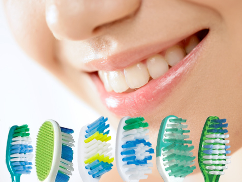
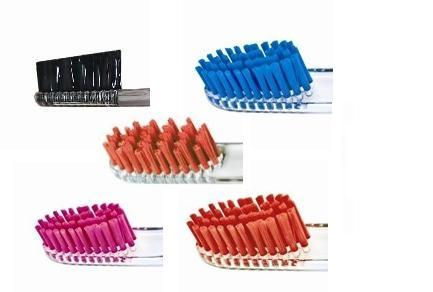

Выбор зубной щетки
Зубная щётка является неотъемлемой частью нашей каждодневной жизни. Она играет ведущую роль в механической очистки зубного налёта, одновременно проводя массаж прилегающей десны.
На сегодняшний день имеется большое разнообразие зубных щёток, и при выборе их, рекомендую обратить внимание на несколько важных моментов:
Щетина зубной щётки1. Прежде всего необходимо правильно подобрать жёсткость щетины,которая должна соответствовать особенности полости рта.
- Жесткие зубные щётки (hard) – рекомендуют использовать только при назначении врача. Так как они могут травмировать десну и способствовать стиранию твёрдых тканей зуба.
- Зубные щётки средней жесткости (medium) – используются при нормальном состоянии пародонта.
- Зубные щётки мягкой жесткости (soft) – используются при повышенной кровоточивости дёсен.
- Зубные щётки с очень мягкой щетиной и закруглёнными кончиками (sensitive) – используют при повышенной стираемости зубов, клиновидных дефектов и заболевания пародонта.
2. Также желательно выбирать зубную щётку с разноуровневой пострижкой щетины, так как она облегчает проникновение к труднодоступным участкам полости рта и повышает качество очищения дальних зубов.
3. Своё предпочтение необходимо отдавать фирменным щёткам, так как в их производстве используют высококачественные материалы и соответствуют всем критериям мирового стандарта.
Конструкция зубной щёткиРучка зубной щетки должна быть не скользкой с удлинённой рукояткой, а форма головки округлая и не большая, это более оптимальное условие для эффективного очищения.
Лучше всего использовать зубные щётки с индикацией степени износа. Это позволяет контролировать эффективность очищения зубов, так как очищающая способность снижается по мере износа щетины зубной щётки. Это видно по цветным пучкам, которые обесвечиваются наполовину, напоминая о необходимости замены щётки.
Полезная информацияМенять зубную щетку следует 1 раз в 3 месяца. Лучше также заменить средство личной гигиены после перенесенных вирусных заболеваний.
Хранить щетку в стакане головкой кверху. Это снижает количество микроорганизмов в зубной щетке.
Большинство людей, к сожалению чистят зубы неправильно – горизонтальными движениями вдоль зубного ряда, загоняя зубной налёт в межзубные промежутки, которые и без того довольно сложно вычистить. Необходимо правильно использовать технику чистки зубов или применять электрическую зубную щётку, у которой повышенная очищающая способность.
Рекомендуемые записи:
Выбор зубной пастыЧитать Кариес зубовЧитать Повышенная чувствительность зубовЧитатьРекомендуемое видео:
Косметическая стоматология